KIRA · ORIGINAL + AMPLIFIER DLC
남궁우와 같이 시작하는 키라 통합 셋리스트
OBS는 익숙해도 설치 파일이 낯설 수 있어요. ZIP을 풀고 버튼 하나를 누르면, 그다음부터는 OBS 안에서 조작할 수 있어요.
1. 방송이 끝나면 OBS를 닫아요
방송·녹화가 끝났는지 확인하고 OBS를 완전히 닫아 주세요. 설치 프로그램은 OBS가 열려 있으면 먼저 종료해 달라고 안내해요.
2. 설치 ZIP을 받고 압축을 풀어요
위의 설치 ZIP 받기를 눌러요. 받은 파일 이름은 KiraSetlist-Integrated-1.2.0.zip이에요. ZIP을 우클릭하고 모두 압축 풀기를 해 주세요.
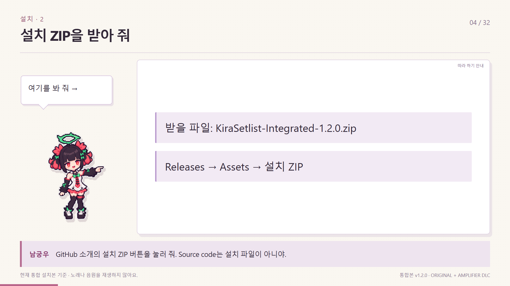
압축을 푼 폴더에 설치하기.exe와 app 폴더가 함께 있어야 해요. ZIP 안에서 exe만 따로 꺼내 실행하면 안 돼요. GitHub의 Source code는 설치 파일과 달라요.
3. 설치 버튼을 눌러요
설치하기.exe → 설치하고 OBS에 적용을 누르고 완료 안내를 기다려 주세요.
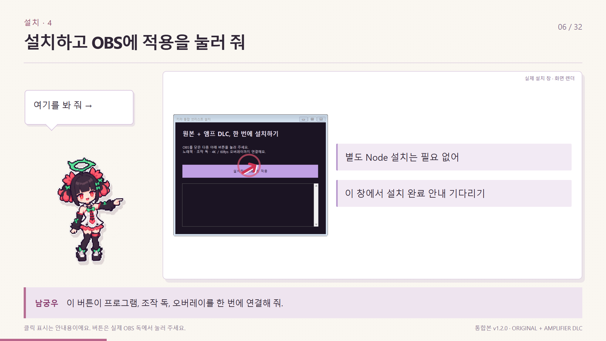
프로그램과 실행에 필요한 Node, OBS 자동 시작 스크립트, 조작 독, 4K 오버레이가 함께 설치돼요. 별도로 브라우저나 터미널을 켤 필요 없어요.
설치가 끝나면 OBS가 열려요. 장면 모음은 키라 통합 셋리스트 (원본 + DLC)예요. 이전 방송 장면을 바탕으로 복사한 모음이며 기존 모음도 남아 있어요. 다른 곳에 설치한 OBS는 직접 열고 이 장면 모음을 선택해 주세요.
4. 원본 / 앰프 DLC를 골라요
OBS의 키라 통합 셋리스트 독에서 위쪽 버튼을 눌러요.
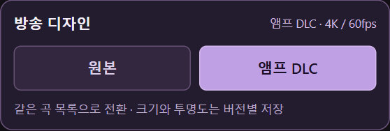
원본과 DLC는 노래책·오늘의 리스트·현재 곡을 공유해요. 크기·투명도·표시 곡 수는 디자인별로 기억해요.
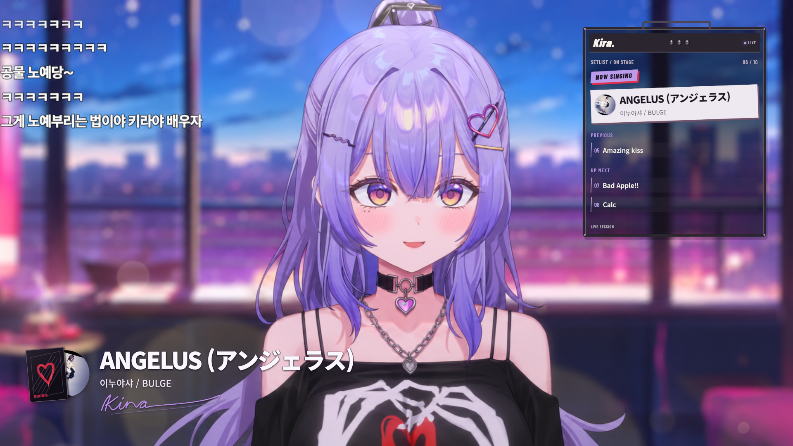
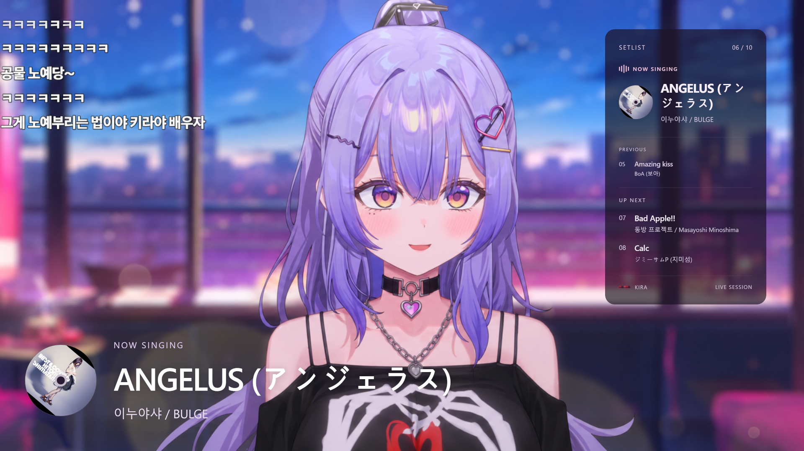
조작 독이 안 보이면 OBS의 독 메뉴에서 키라 통합 셋리스트를 켜 주세요. 독 제목을 끌어 원하는 자리에 붙이고, 경계선을 끌어 너비를 맞춰도 돼요. 조작 독은 방송에 나오지 않아요.
5. 오늘 부를 곡을 담아요
노래책 탭에서 곡명·가수·초성으로 검색한 다음 곡 옆 +를 눌러요. 장르 버튼으로 찾을 곡을 좁힐 수도 있어요.
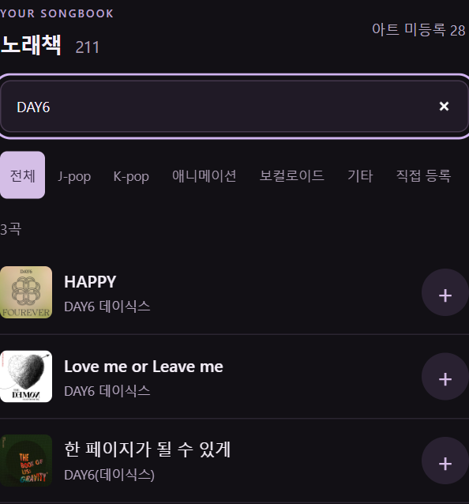
없는 신청곡은 리스트 → + 직접 추가를 눌러요. 곡명은 꼭 넣고, 가수와 앨범 이미지는 필요할 때 넣으면 돼요.
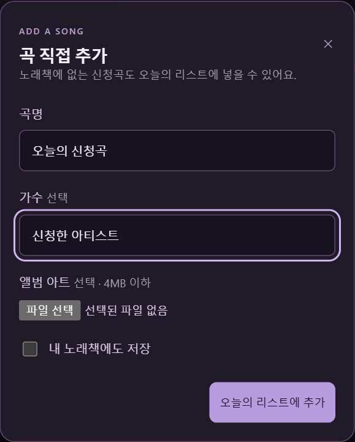
내 노래책에도 저장을 켜면 다음 방송에서도 검색할 수 있어요. 끄면 오늘의 리스트에만 담아요. 이미지가 없으면 키라 기본 CD로 표시해요.
6. 부르기 → 완료 · 다음 곡
리스트에서 부르기를 눌러 현재 곡을 정해요. 노래가 끝나면 완료 · 다음 곡, 실수하면 되돌리기를 눌러요.
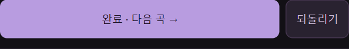
대기 곡은 드래그하거나 ↑ ↓로 순서를 바꿀 수 있어요. 이 도구는 화면에 곡 정보를 보여 주며, 노래를 재생하거나 자동으로 듣고 감지하지 않아요.
7. 오른쪽 창에 몇 곡을 띄울까요?
화면 설정 → 표시 구성에서 고르세요. 더 세밀하게 정하려면 이전 곡 1개 표시와 다음 곡 수를 조절해요. 다음 곡은 0~5개까지 표시할 수 있어요.
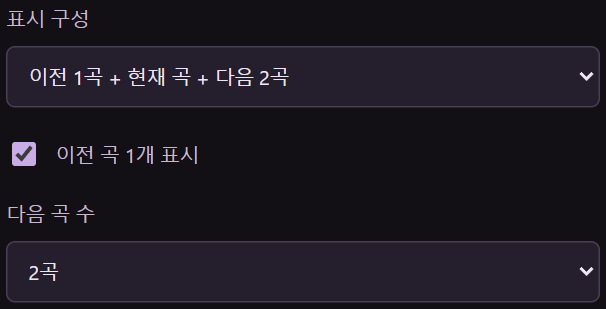
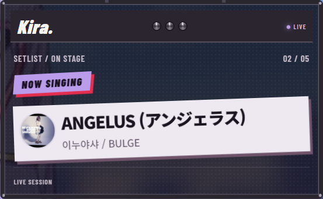
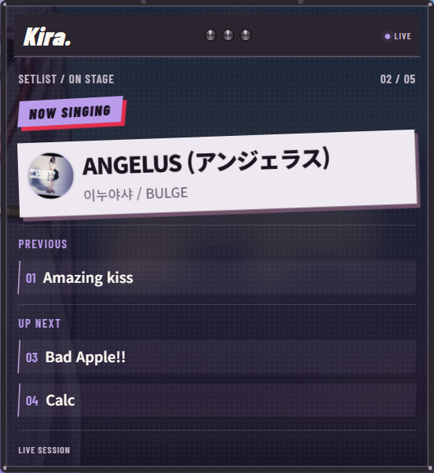
DLC의 이전·대기 곡에는 번호와 제목만 나와요. 현재 곡에는 앨범 아트·제목·가수도 표시해요. 화면에서 숨긴 곡도 실제 리스트에는 남아요.
8. 크기와 투명도를 맞춰요
우측 패널 크기로 창을 줄이고, DLC에서는 앰프 너비도 조절해요. 오른쪽 여백·위쪽 여백으로 위치를 맞춰요. 처음 배치로 돌아가려면 크기·위치 기본값으로를 눌러 주세요.
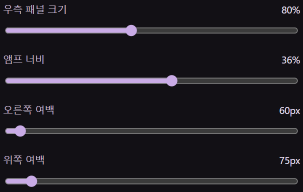
셋리스트 배경은 0~100%로 조절해요. 낮출수록 배경이 더 비쳐요. 실제 방송 배경 위에서 제목이 잘 읽히는지 확인해 주세요.
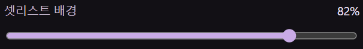
9. 왼쪽 정보와 회전도 내 취향대로
좌측 하단 곡 정보로 전체를 켜고 끌 수 있어요. 하단 곡 정보 크기는 따로 조절해요. DLC의 LP 슬리브 표시와 사인 색도 여기 있어요.
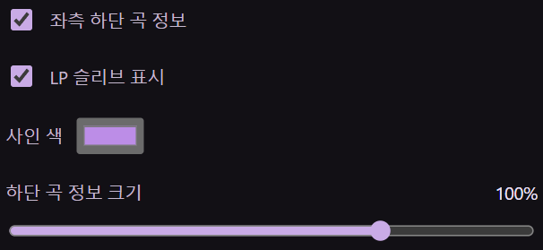
앨범 아트 회전을 켜고 한 바퀴 시간을 15~60초로 정해요. 슬리브의 붉은 하트는 키라 의상에서 가져온 디자인이에요.
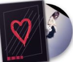
10. 앨범 이미지를 바꾸려면
노래책이나 리스트에서 작은 앨범 이미지를 눌러요. 후보를 확인해 선택하거나 내 이미지 등록으로 PNG·JPG·WebP를 올릴 수 있어요. 파일은 4MB까지예요.
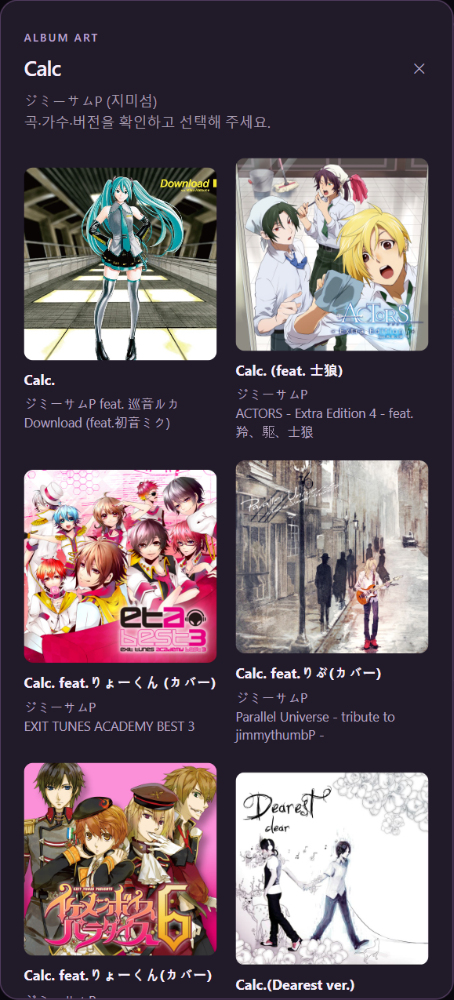
외부 앨범 이미지에는 인터넷이 필요해요. 이미지가 없는 곡이나 불러오지 못한 이미지는 기본 CD로 대신 표시해요.
다음 방송·업데이트·백업
다음부터는 OBS만 켜 주세요. 현재 곡·목록·설정은 자동 저장돼요. 업데이트는 OBS 종료 → 새 ZIP 압축 해제 → 설치하기.exe 실행이에요. 같은 설치 폴더에서는 개인 데이터가 보존돼요.
파일 탐색기 주소창에 %USERPROFILE%\KiraSetlistUnified를 입력하면 설치 폴더가 열려요. 백업은 이 안의 data와 public/artwork를 함께 복사해 둬요. 자동 OBS 설정 백업은 %APPDATA%\obs-studio\kira-install-backups에 있어요.
잘 안 보이면 여기부터
| 상황 | 이렇게 확인해요 |
| 설치 버튼이 OBS를 닫으라고 해요 | 방송·녹화를 종료하고 OBS를 완전히 닫은 뒤 다시 눌러요. |
| 조작 독이 없어요 | 독 → 키라 통합 셋리스트를 켜고, 장면 모음이 통합본인지 확인해요. |
| 연결 중에서 멈춰요 | 도구 → 스크립트의 kira-unified.lua에서 연결 다시 시작을 눌러요. 설치 폴더를 옮겼다면 재설치해요. |
| 내 방송 위에 안 보여요 | 소스 목록에서 키라 통합 셋리스트 오버레이를 캐릭터·배경 위에 올리고 눈 아이콘을 켜요. 다른 장면에는 기존 소스 추가로 붙여요. |
| 원본 배경이 검게 보여요 | 현재 통합 ZIP으로 업데이트한 뒤 브라우저 소스 속성의 현재 페이지의 캐시를 새로고침을 눌러요. 방송 소스 URL에는 preview=1을 붙이지 않아요. |
| 글자가 흐려 보여요 | 브라우저 소스 너비 3840, 높이 2160, 사용자 지정 FPS 60을 확인해요. 창 크기는 앱의 화면 설정에서 맞춰요. |
| 전체 방송이 30fps예요 | 설치는 현재 OBS 프로필을 60fps로 설정해요. 다른 프로필이라면 설정 → 비디오에서 FPS를 확인해요. |
| 예시 캐릭터 배경을 숨기고 싶어요 | 예시 배경 소스가 있으면 숨기고 실제 방송 배경·캐릭터 소스를 사용해요. 오버레이 자체는 투명해요. |
노래책은 2026-10-05에 가져온 스냅샷이에요. Notion을 수정해도 자동으로 반영되지는 않아요. 설치본에 개인 목록이나 OBS 비밀번호는 포함하지 않아요.